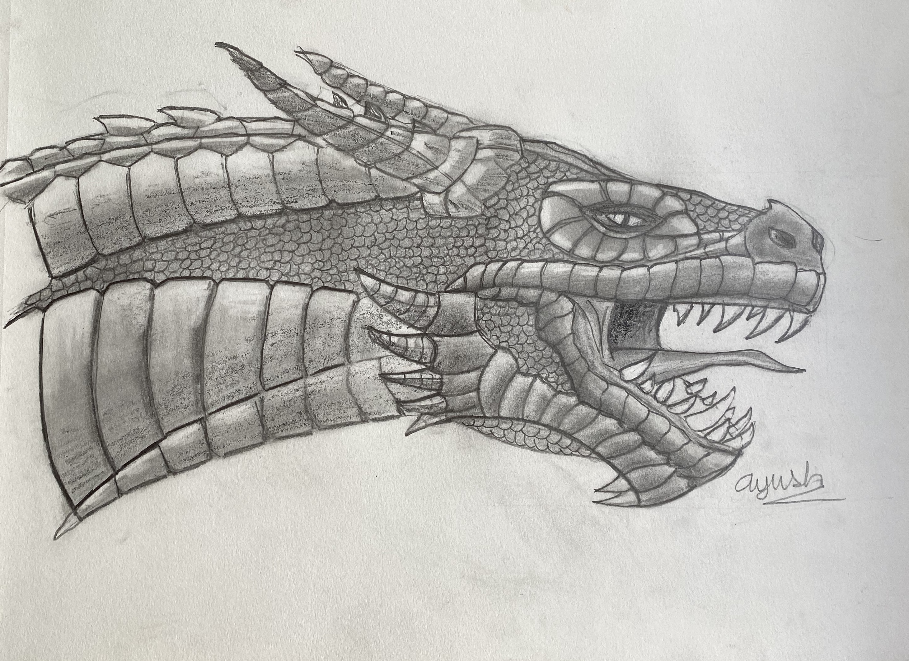

Featured Works

#BLM
Charcoal
-

-

-

-

J. Cole
Colored Pencil
About Me Page
My name is Ayush Gupta. I am a junior at American High School in the Bay Area. I am a self-taught artist specializing in photo-realistic drawings. I have become dazzled with the challenge of realistic drawing and the detail that is needed. I love drawing as every picture has its own unique story to tell. While these drawings may appear effortless, they are often the result of many hours of hard work at my desk with a great amount of focus. I love sharing the beauty of art with the world and am compelled to follow my passion, bringing life to each piece of paper all with just a pencil.
I started off my love for art at as early as 2nd grade. I remember my first art classes, sitting in my teacher's garage, learning the fundamentals of basic art. I created my first work of art there which sparked a long chain of artwork down the road. I moved on to oil paintings. I created dozens of paintings, some coming out good and some not so much. I spent a couple years taking classes and became better at the various techniques. I focused objects you would find in nature, watching inanimate objects come to life from seemingly nothing. As I grew older, I moved away from taking classes and taught myself how to draw and color right from my own desk. I used charcoal, graphite, colored pencil, and other mediums. I failed a lot in the beginning but kept improving from watching others online. I particularly enjoy making human faces as it is fascinating seeing someone so lifelike staring right back at you from the paper.